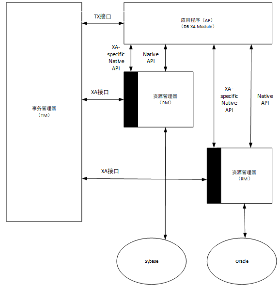
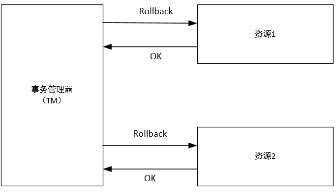
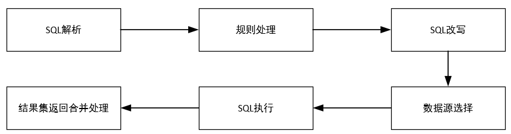
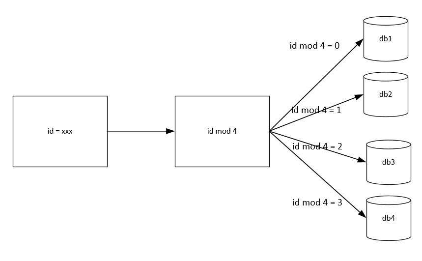
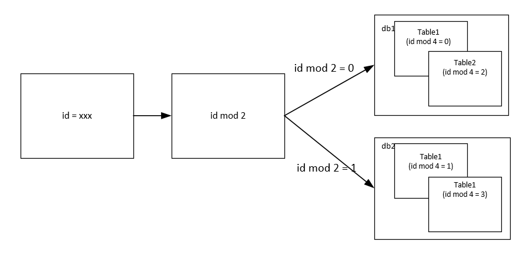
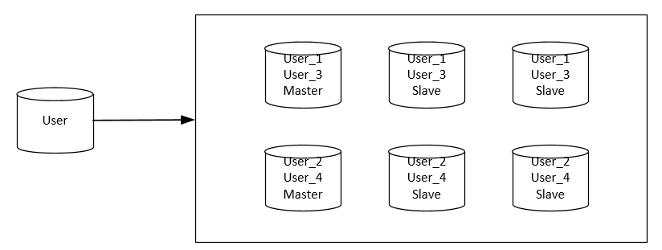

传统的网站基本都是采用以下的方式进行实现：
但是随着数据量不断增加，单数据库无法满足我们的欲望，我们要对其进行合理的整改。
随着网站的快速发展，数据量和访问量不断上升，数据压力越来越大，我们在硬件不变的基础上就需要给现有数据库减压，减压的思路有3种：
数据库拆分有两种方式：垂直拆分和水平拆分，需要注意的是，无论是这两种方式中的哪种，都是将一个数据库中的数据拆分到多个数据库，所以可能会造成一些影响。
垂直拆分是将一个数据库中不同业务单元的数据拆分到不同的数据库里面，简单的说，就是把单表属性进行拆分，然后构成多表，两表连接后还是原来的数据表。
影响：
水平拆分是根据一定规则吧统一义务单元的数据拆分到多个数据库，简单的说，就是一个数据库中的数据太多，将其分到几个数据库进行存储。
影响：
针对上述的影响，我们对其一一提出解决方案：
分布式事务是指事务的参与者、支持事务的服务器、资源服务器以及事务管理器分别位于分布式系统的不同节点上。X/Open组织提出了一个分布式事务的规范——XA。在看XA之前，我们首先了解一下X/Open组织定义的分布式事务处理模型——X/Open DTP模型。
X/Open DTP 模型中定义了3个组件：
上述3者的通讯关系如下图：

其中AP和RM是必要的，而TM是我们额外引入的。至于为什么我们将在下文中介绍。
DTP中还定义了其他几个概念：
整体的DTP模型如下：

两阶段提交。那么何为两阶段提交?对于单库来说，我们完成事务后，只有两种结果，提交和回滚。然而在分布式系统中，在提交之前增加了准备阶段，为了防止一个数据库提交了，而其他数据库没有提交的问题出现，因此成为两阶段提交。具体情况如下：
两阶段提交的正常情况图如下：


两阶段提交失败情况：

2.第一阶段出现后的第二阶段

网络上交互次数的增多以及引入事务管理器的开销，是使用两阶段提交协议使分布式事务开销增大的两个方面。因此，在进行垂直拆分或者水平拆分后，要想清楚是否一定要引入两阶段的分布式事务。
单机事务存在ACID的性质，分布式事务虽然不能做到和单机事务一样，但是也应保存一定特性，在这里我们了解一下CAP理论和BASE模型。
然而分布式系统并不能同时满足上面3项，我们可以选择上面两个来提升，而另外一个会受到损失。那么我们在系统设计和权衡时，就是在选择CA、AP或CP。
CAP理论用图示表示如下：

综上所述，我们选择AP，而放弃C，采用这种方式设计分布式系统。
虽然我们无法保证数据的强一致性，但是我们可以保证数据的最终一致性。Paxos协议是一个相对于两阶段提交更简单的策略，而Quorum和Vector Clock算法也用来提供一致性，下面我们对其进行介绍。
转变为水平分库时，原来单库中的Sequence以及自增ID的做法需要改变。因为同一张数据表被分在不同的数据库中，因此，自增ID无法保证唯一性、连续性了，我们需要考虑处理办法。
关于唯一性，我们可以使用UUID生成方式，但是这种生成方式生成的ID不具备良好的连续性。
对于连续性，我们可以将所有ID集中放在一个地方进行管理，对每个ID序列独立管理，每台机器使用ID时就从这个ID生成器上取。然而这种方案有几个关键问题要解决：
在此提出两种方式：


这种方式由于没有中心的控制节点，并且我们还不希望生成器之间进行通信，否则会是系统非常复杂，因此数据的ID并不是严格按照进入数据库的顺序而增大的，在管理上也要有额外的功能。
对于进行分库后，Join的数据还在一个数据库中就不会出现问题。但是，如果需要的业务数据被分在多个库中，那么就会出现问题。解决思路有如下方式：
如果分库后每个单库数据都是内聚的，即每个库内进行外键约束的数据也在该库内，那么就没有问题，否则就只能靠应用层保证外键约束了。
对于数据被分为多库多表的情况，我们对数据库的操作也会相应进行转变。查询操作一般会出现如下的情况。
页号*页大小的数据后，进行排序，然后选出恰当的数据进行传输。数据访问层就是方便应用进行数据读/写访问的抽象层，我们在这个层上解决各个应用通用的访问数据库的问题。
数据层负责解决应用访问数据库的各种共性问题，数据层的以怎样的方式呈现给应用呢？
下面的图示展示了以上三种方式的结构：

通过JDBC方式使用的数据层是兼容性和扩展性最好的，实现成本也是最高的。底层封装了某个ORM框架或者类ORM框架的方式具备一定的通用性（不能提供给另外的ORM/类ORM框架用），实现成本相对JDBC接口方式的要低。而专有API的方式是在特定场景下的选择。
专有API的方式和对外提供JDBC接口的方式都直接使用了下层数据库提供的JDBC驱动，因此更加灵活，而基于ORM/类ORM框架的方式则在数据层和JDBC驱动之间隔了一个第三方的ORM/类ORM框架，这在有些场景下会造成一些影响。
上述的数据访问方式，对于查询方面的实现也有很大影响，我们以排序后分页为例。数据形式如下：

基于ORM或者类ORM的方式，由于框架的封装，导致很多东西会很麻烦，这种情况下，我们就需要把足够多的数据加载到内存中，再找出正确数据进行显示，例如上述数据源，查询第10页的数据，就要从数据源1和数据源2分别取出200条数据，总共400条，然后进行归并排序后筛选，丢弃不必要的数据。
对于采用JDBC的方式访问，我们需要取出对应数据，JDBC驱动中有fetch size这一设置，其用来控制数据库返回的记录数。我们直接使用的JDBC可以直接控制数据的取出，然后使用两个有序链表记性合并排序，而只会浪费一个对象。在页数很大时，直接使用JDBC是有很大优势的。

SQL解析主要考虑的问题有如下两个：
在进行SQL解析时，对于解析的缓存可以提升缓存速度，但仍要注意控制缓存的容量限制。
通过解析SQL，我们可以得到SQL中的关键信息，例如表名、字段、where条件等。这些信息可以通过提示的方式实现，该方式会把一些要素直接传进来，而不用解析整个SQL语句，使用这种方式的一般情况是：
固定哈希的方式为，根据某个字段取模，然后将数据分散到不同的数据库和表中。例如我们通过id取模进行分库，那么形式如下：

除了根据id取模进行分库，我们还可以采用此方法进行分表，示意图如下：

一致性哈希是MIT的Karger及其合作者在1997年发表的学术论文中提出的。
一致性哈希所带来的最大变化是节点对应的哈希值变成了一个范围，而不再是离散的。在一致性哈希中，我们会把整个哈希值的范围定义的很大，然后把这个范围分配给现有节点。如果有新节点加入，那么这个新节点会从原有的某个节点上分管一部分范围的哈希值；如果有节点退出，如果这个节点原来管理的哈希值会给它的下一个节点来管理。
下面给出一个例子，如果哈希值的范围为0到100,共有4个节点，那么他们管理的范围分别为[0,25)，[25,50)，[50,75)，[75,100]。如果第二个系欸但那退出，那么剩下的节点管理范围变为[0,25)，[25,75)，[75,100]。如果从第二个和第三个节点之间增加一个节点，那么管理范围就变成[0,25)，[25,50)，[50,63)，[63,75)，[75,100]。
然而上述方法是有一定问题的，因为，新增一个节点后，新生成的节点和受影响的节点的范围明显小于其他的，减少一个节点，则合并成的节点范围会明显大于其他的。这样的话，压力就会导致很不平衡。
为了解决这个问题产生了虚拟节点。一个物理节点可能对应多个虚拟节点，虚拟节点平均分布在整个哈希环上，这样就可以尽量解决负载均衡问题。
映射表是根据分库分表字段的值的查表法来确定数据源的方法，一般用于对热点数据的特殊处理，或者再一些场景下对不完全符合规律的规则进行补充。常见的情况是以前面的方式为基础，配合映射表来执行。
自定义计算方式是最灵活的方式，它已经不算是以配置的方式来做规则了，而是通过比较复杂的函数来解决数据访问的规则问题。
例如下面根据id取模分成了4个库，可以使用下面的方式：
if(id in hotset)
{
return 4;
}
return id % 4;
为何要改写SQL呢？因为我们现在要解决的问题已经从单库单表变为了多库多表问题，那么在同一数据库中，表的名字由于不能重复，所以就会出现了改写SQL的问题。例如User表在分库分表后表明可能为User_1,User_2等。
除了修改表名外，有时还要修改索引名。
当然，还有一种情况，还记得我们对表的查询操作么？求最大值，最小值，平均值，这些我们都是采用间接的方式求的，那么就要改写SQL用来获取源数据。
在进行了分库分表后，我们通常都会给库提供备库，如下图：

这样数据库就从单一的一个节点，变为了一个数据库矩阵，我们要决定访问分组后的哪个库。这些苦一般都是一写多读的（有些是多写多读的），根据当前要执行的SQL特点（读、写），是否在事务中以及各个库的权重规则，计算得到这次SQL请求要访问的数据库。
这也就是最后两部了，只需要注意异常处理，其余的也没啥。
三层数据源整体视图：